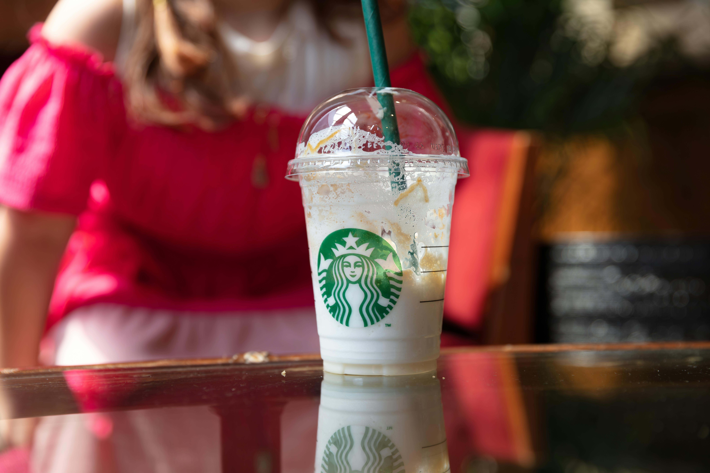
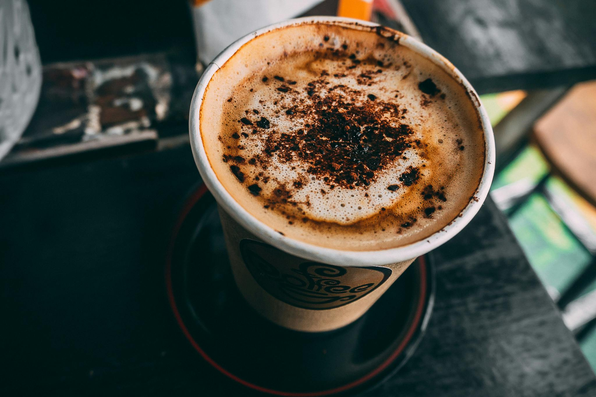
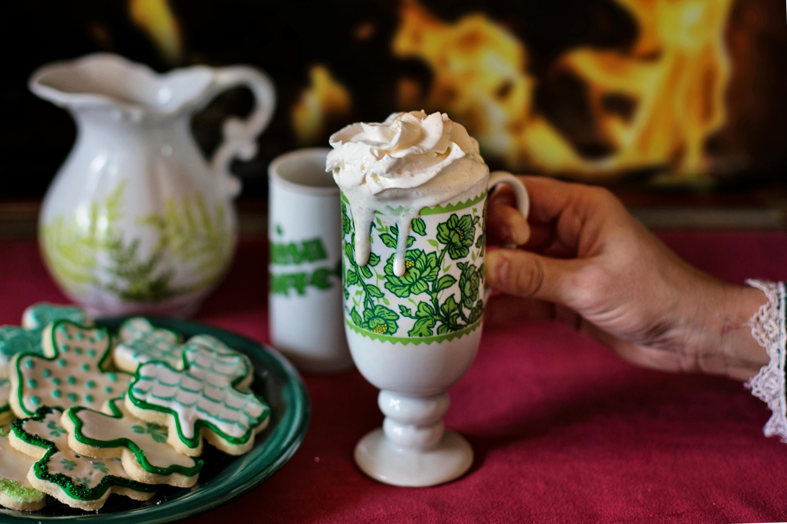
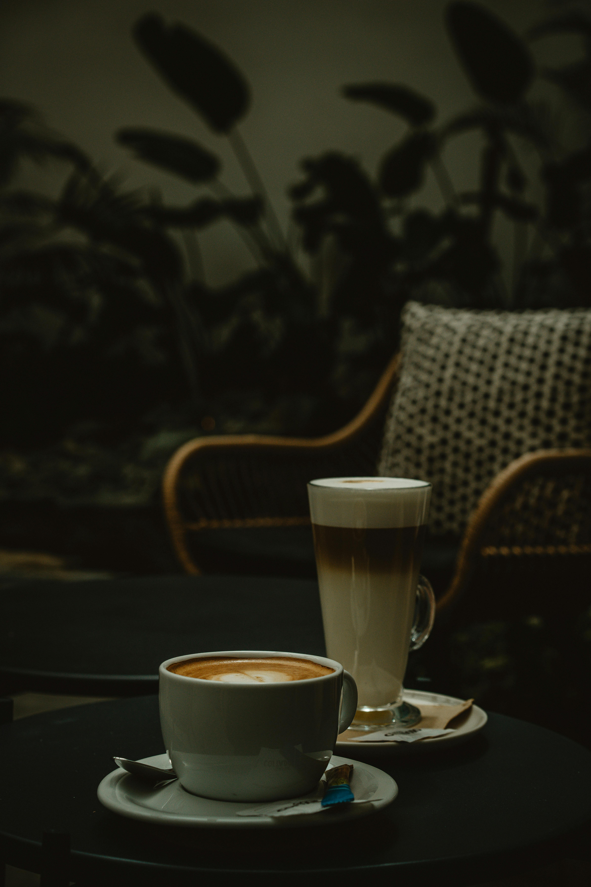
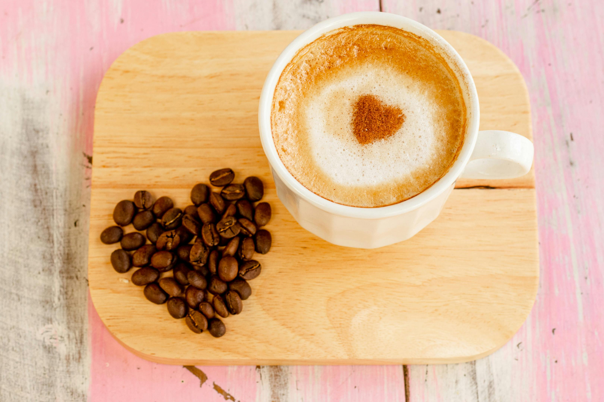
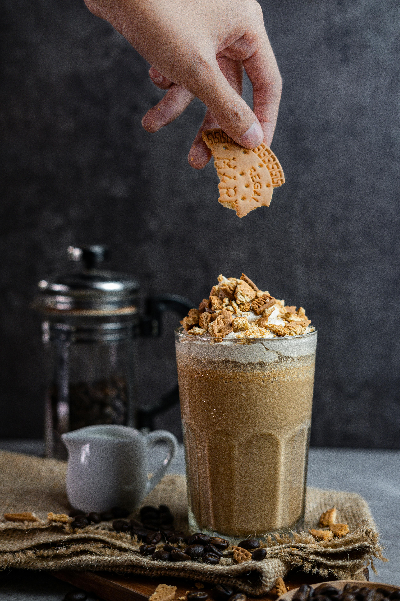

Cappuccino
Cappuccino
Even if one is not a Coffee fan, all must be aware of this famous beverage. Cappuccino is an espresso-based drink that comes from an Austrian drink called Kapuziner. It is touted as the ‘ideal morning Coffee,’ prepared with steamed milk foam or micro foam.
There are different ways to prepare a Cappuccino. However, generally, it is prepared by pouring equal amounts of steamed milk and foam into one-third of the espresso. Thus, it is more intense than most of its counterparts.
 Latte
Latte
Latte derives its roots from the Italian land. The word Latte means ‘milk Coffee’ in Italy. This type of Coffee is a much creamier version, said to have served the American tourists in Italy who thought cappuccino was too strong for their palate.
Although, a latte is made with espresso and a high quantity of steamed milk. It is also served as an iced latte in most parts of the world.

Frappuccino
Another popularly known drink is Frappuccino. Although its origin is an accidental one, today, Starbucks owns the trademarks for Frappuccino.
It is an espresso-based drink consisting of a crème base blended with iced Coffee. However, other alternatives are also available that are caffeine free.
While Frappuccino is a blended type of Coffee, frappes are shaken or whisked. The terms are often used interchangeably.

Mocha
Some believe that Moka or Mocha is a type of arabica grown in Yemen. On the other hand, the drink is considered to be popularised by an Italian Coffee house named Caffe al Bicerin.
The mocha Coffee bean is famous for having a green and yellow tint compared to the other brown-coloured beans. It is a chocolate-flavoured warm beverage made with layers of espresso, milk and chocolate.
 Americano
Americano
Americano is a strong Italian espresso drink. Its history dates back to World War II when American soldiers were stationed in Italy. They wanted something resembling the black Coffee that they used to drink. This adaptation was received to such an extent that it got its name as ‘Americano.’
This type of Coffee contains an espresso shot diluted in hot water. It Gives a similar strength too, but a different flavour from traditionally brewed ones.

Irish Coffee
Irish Coffee is a perfect fit for a wintry night. It was first brewed in 1943 by Joe Sheridan, an airport chef who came up with the drink on a chilly winter night to comfort misplaced passengers.
Although a beverage, Irish Coffee is prepared as a cocktail containing: Coffee, whiskey, sugar, and cream. Remember, while making the cocktail, only heat the Coffee and pour other ingredients into it.
It is a go-to drink for everyone who wants to chill at home and be comfortable.

Macchiato
A macchiato is essentially an espresso-based drink that means stained or spotted in Italian. This type of Coffee is similar to both, Cappuccino and Doppio. However, the difference lies in the small amount of milk foam on its top that mellows its intensity.
Apart from the espresso-based Macchiato, the drink also has other versions. There exists a latte macchiato that is the complete opposite of the espresso. Here, a shot of espresso is stained with steamed milk.

Cortedo
Since the milk is used to cut back the espresso's acidity; thus, the name cortado, which in Spanish means ‘cortar or to cut.’ It was first seen in Spain's Basque County, where cortado was given its name.
The milk blends smoothly into the espresso without forming any layers. It provides a space for the flavours to enhance. Thus, a cortado becomes a fine balance of espresso and steamed milk.

Ristretto
Ristretto is an Italian word for restricted. It is fundamentally an espresso shot, however, with a subtle difference in flavour from the standardised shots. The drink uses a little hot water, usually 15-20 millilitres. Thus, it has a sweeter and brighter flavour compared to the bitter taste of traditional espresso or a doppio.